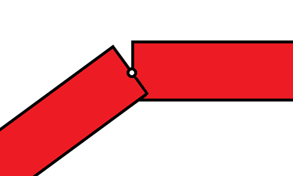
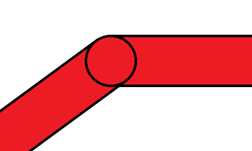

Posted on May 5, 2013
Finger Paint
A Learning Project
I created this simple Android app a long time ago in an attempt to teach myself about Android development. It is a very naive implementation of a finger painting application. It is possible to pick paint colours, stroke widths, and background canvases. Aside from solid colours, the user can also choose a picture on the phone to use as the background instead. There are quite a few things that I learned about, including a number of things I learned not to do.
The Basics
Looking back on my old code now, it's cringe-worthy looking at some of the things that I wrote. I'll go over some the things that I would change a little later. First I want to talk about the drawing method that I used.
The way that the app paints is quite simple. When the user touches the screen, the app records a Point. When the user moves a finger along the screen, the app records the new point (a FriendlyPoint in this case), and connects it to the previous point. Fairly straightforward.
The Point class looks something like this:
public class Point {
public final float x, y;
public final int col;
public final int width;
public Point(final float x, final float y, final int col, final int width) {
this.x = x;
this.y = y;
this.col = col;
this.width = width;
}
public void draw(final Canvas canvas, final Paint paint) {
paint.setColor(col);
canvas.drawCircle(x, y, width/2, paint);
}
}
And the FriendlyPoint class looks something like this:
public class FriendlyPoint extends Point {
private final Point neighbour;
public FriendlyPoint(final float x, final float y, final int col, final Point neighbour, final int width) {
super(x, y, col, width);
this.neighbour = neighbour;
}
@Override
public void draw(final Canvas canvas, final Paint paint) {
paint.setColor(col);
paint.setStrokeWidth(width);
canvas.drawLine(x, y, neighbour.x, neighbour.y, paint);
canvas.drawCircle(x, y, width/2, paint);
}
}
When I had originally written the drawing code, I just drew a line between to joined points. When the user selected a width greater than 1px, the image would end up drawing two lines that didn't quite match up. The result was never very pleasing.
The current implementation paints lines much more smoothly. By drawing a circle (with diameter equal to the width of the line) at each of the 'hinges', the kinks are eliminated.
I have always been interested in graphics and I'm even taking a class on the topic during my upcoming university term. Looking forward to it!
What Not To Do
I don't plan on going back and fixing anything in this app because I think it shows what I've learned since then. However, I would like to comment on what is wrong in the code.
The entire list of points redraws every time a new point is added. This is very inefficient and the effects of this decision can definitely be felt as the app slows down when more points are drawn. A better choice would be to just draw the newest point and only redraw everything if something large happens that would affect the existing points, like changing the background.
I also don't really like how I implemented the options system. The menu is only shown when the user clicks on the hardware menu button that Android phones have. I think it would have been worth the screen real estate that the menu would take up to make the feature more discoverable.
Once again, all of the code can be found on my github if you feel like checking the rest of it out.